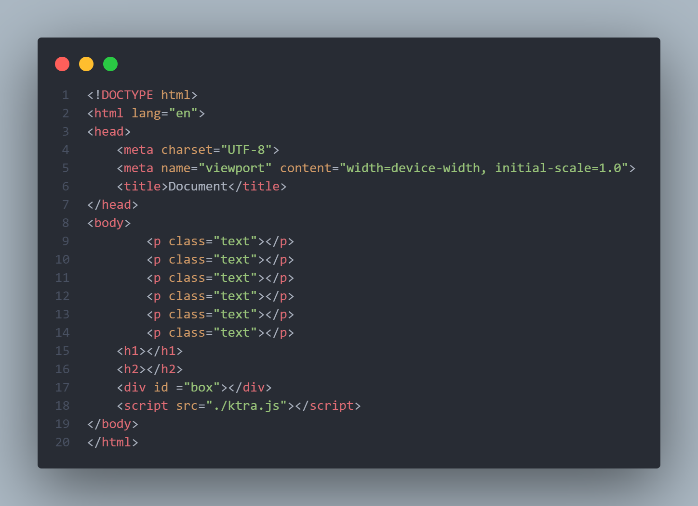
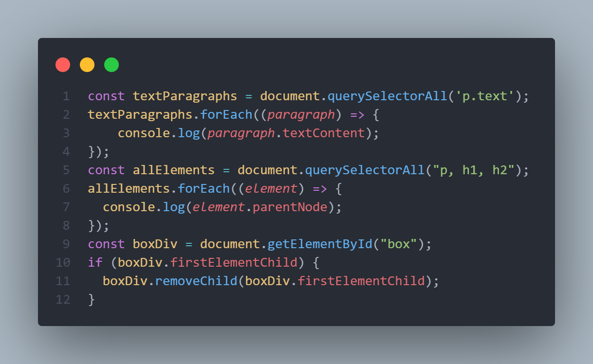
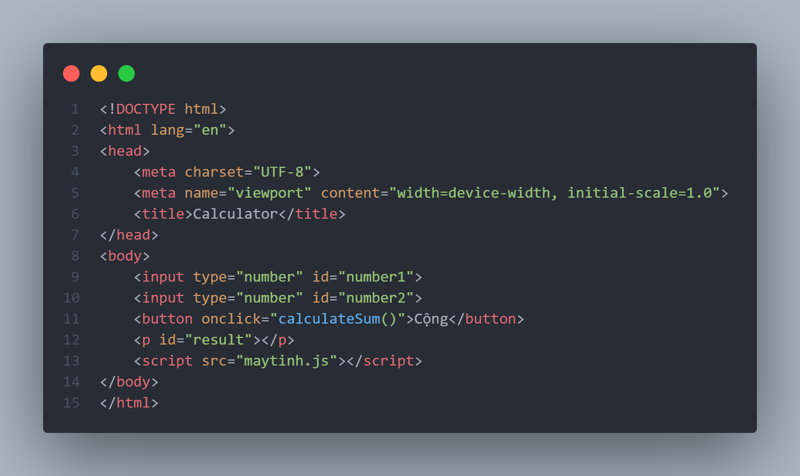
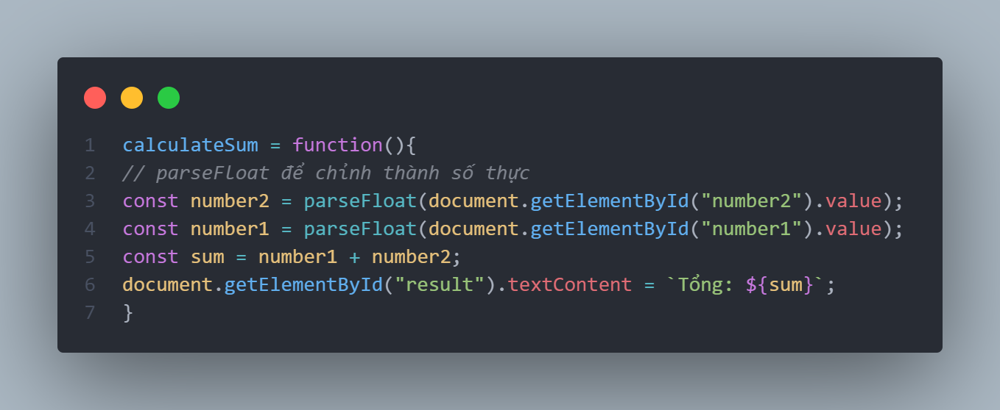
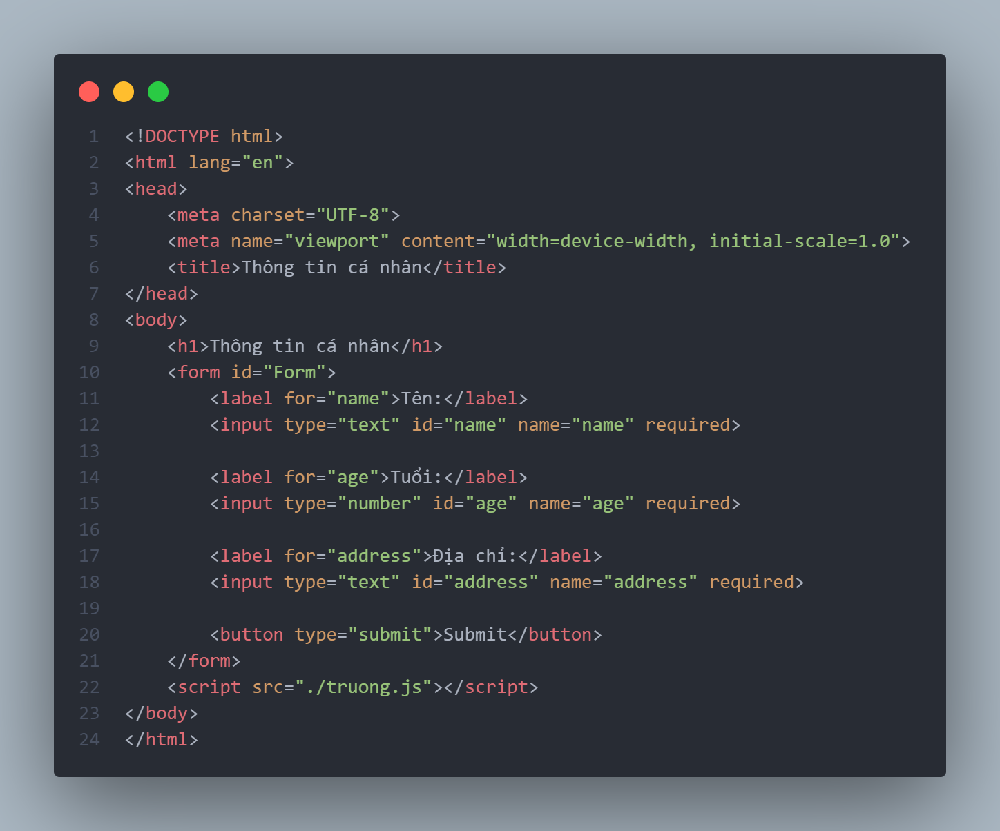
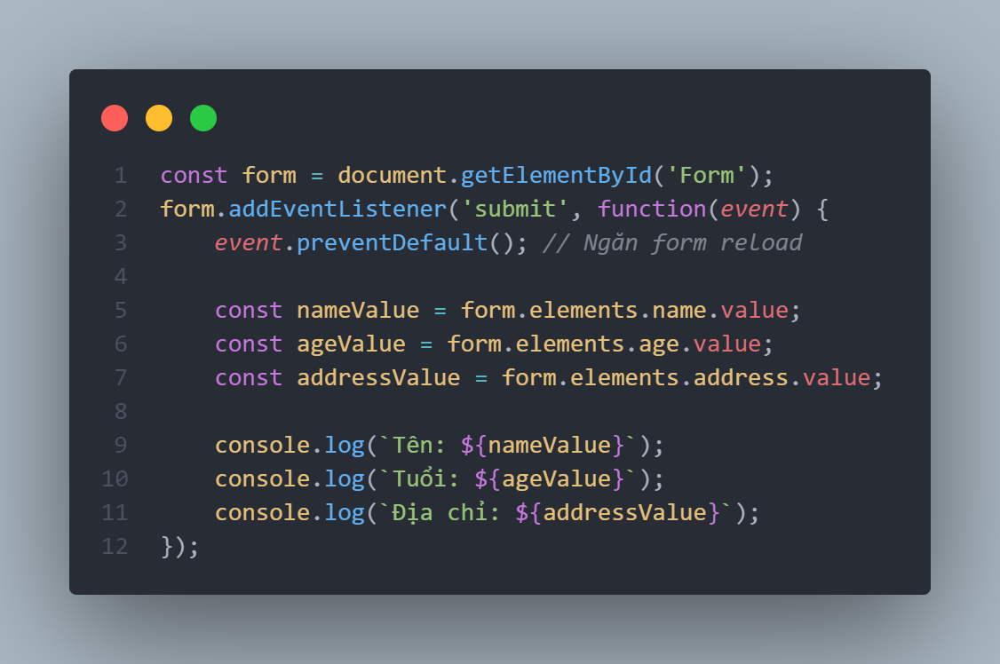
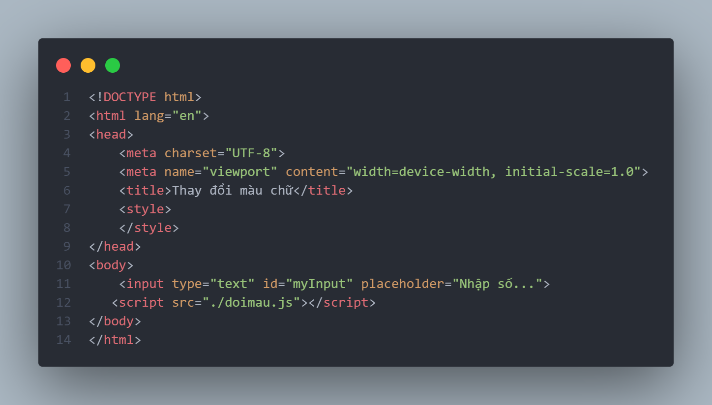
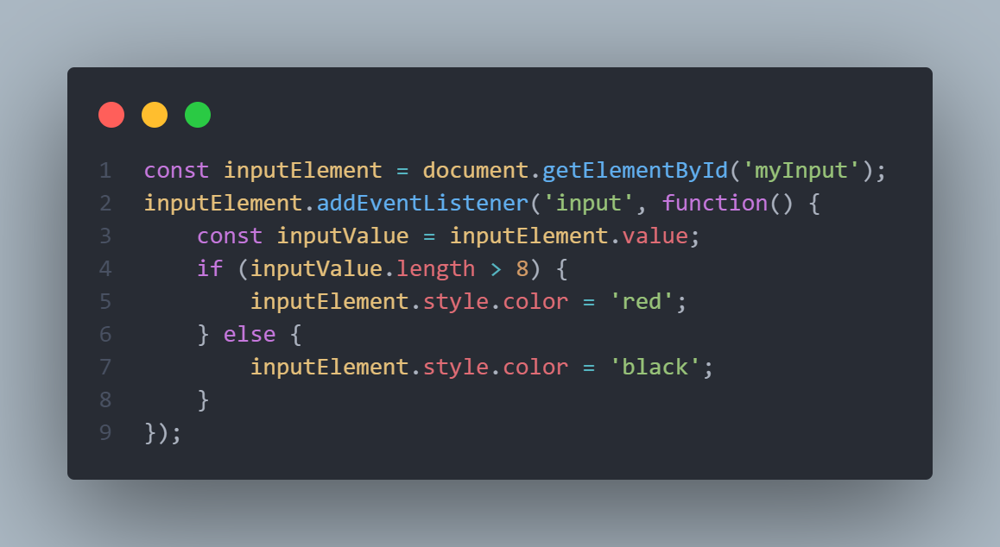

Thực hành in ra nội dung của toàn bộ thẻ p có class="text"
Thực hành in ra phần tử cha của toàn bộ các thẻ p1,h1,h2
Thực hành xóa phần tử con đầu tiên của các thẻ div có id "box"


DOM là gì và nêu ví dụ về DOM
querySelect và querySelectAll khác nhau như nào ? có hàm nào để truy vấn trên phần tử DOM
DOM Tree là j ?làm sao để truy vấn phần tử trên DOM Tree và thực hành và ví dụ
Tạo ra ứng dụng máy tính có 2 thẻ input và 1 button cộng. Xử lý nhập 2 số và nhận nút và hiển thị tổng của 2 số đó


Tạo 1 form có 3 trường: Tên, tuổi , địa chỉ và 1 submit. khi submit thì phải hiện 3 giá trị đó


tạo 1 thẻ input, xử lý Event khi nhập vào đó nếu nhập nhiều hơn 8 ký tự chữ sang màu đỏ, ít hơn 8 ký tự chữ màu đen


Nêu điểm khác biệt giữa Arrow Function và Regular Function . Thực hành khai báo 2 loại Function
từ khóa "this" trong Arrow Function và Regular Function khác nhau như nào ?Ví dụ
Class là j, tại sao cần class? Làm thế nào để tạo 1 class trong JS sử dụng cú pháp ES6? ví dụ
cú pháp constructor trong 1 ES6 Class được sử dụng để làm j
Nêu điểm khác nhau giữa sử dụng Object và sử dụng Class
nêu các cách để xử lý bất động bộ trong JS ? ví dụ cụ thể ?Async/Await có tác dụng gì và sử dụng như nào
ví dụ về Object lồng nhau và lặp qua các thuộc tính của Object
hàm và arrow function khác nhau ở điểm j ? nêu định nghĩa về hàm